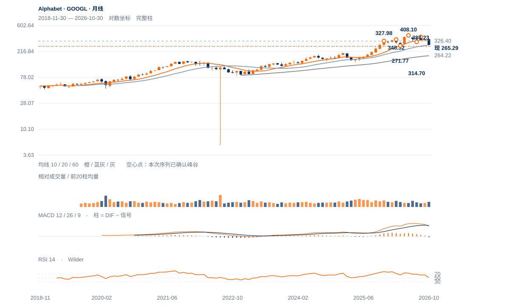

近期偏277下方反抽受压，2—6周先重建原双谷区域，再评估296.49中峰。
Alphabet · 2026-11-20完整收盘
265.29跌破277后，下降结构是否得到确认跟进？
265.29-2.70%
低谷筑底候选失败
分期限展望
未来2—6周先收回276.92—277.07双谷带，再看296.49中峰。缩量测试已经失败，未经中峰两日确认，不重新标作底部完成。
未来1—3个月受5月408.61高区以来较低高点约束。旧双谷破坏后应重新建立较高周谷，恢复296.49只是起点；没有合格新几何结构，不推算确定底部目标。

长期背景
5月408.61之后高点递降，314.90旧谷已失守；280附近长期均衡提供承接试验，却不足以宣布中期下降终结。完整10月均衡和历史水平只提供背景，当前价格需要由后续确认检验。 当前日收盘265.29与已完成月线背景分开判断；11月仍未结束，不提前计为完整月级反转。
中期结构与新证据
完整周线已更新至11月20日：2026-10-01低335.51（2026-10-16确认）；2026-10-14高359.40（2026-10-30确认）；2026-10-30低276.92（2026-11-13确认）。最新一周与上次11月13日背景分别保存；23日仅为本周进行中观察。19日272.66触发276.92原日收失效，20日265.29继续下移，18日缩量回试未获得向上跟进。296.49中峰恢复从未满足两日过滤，5月408.61以来的较低高点背景仍约束修复。
确认与失效
276.92—277.07恢复保持；296.49两日条件需重新实际满足。
276.92原失效19日发生，不用更低新价替换旧线。
主要反方
缩量测试虽失败，仍可能出现急反弹；若277及中峰迅速收回，原下降延续需重新评估。
波动与量能
RSI14 27.78；ATR14 11.31；相对量1.35倍